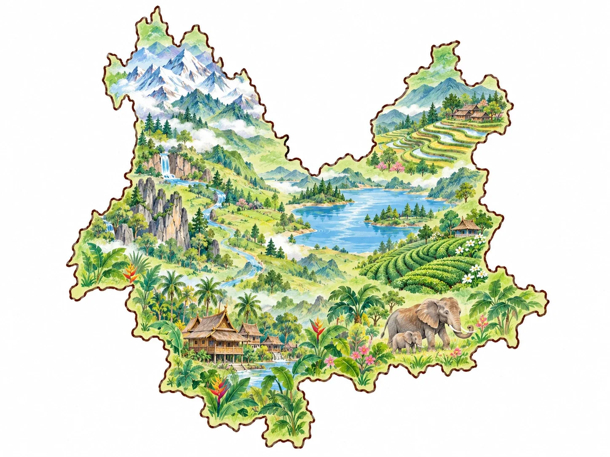
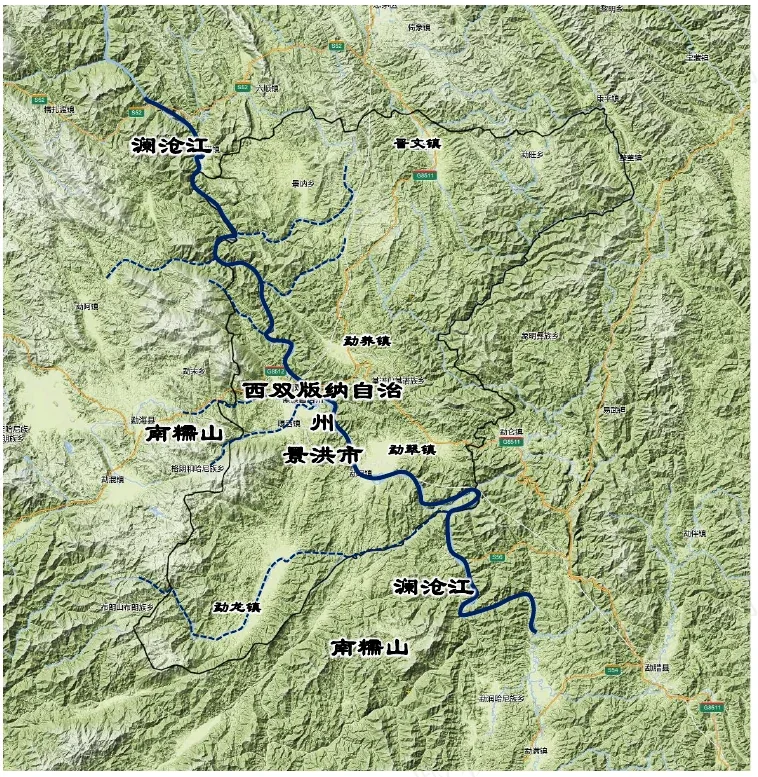

← 返回云南研学地图
LEON'S FIELD JOURNAL · XISHUANGBANNA西双版纳两站雨林研学计划
从基诺山走进真实雨林，再到中国科学院西双版纳热带植物园用科学方法观察植物。两站分别认识“人与雨林”和“植物与生态”，完成一条由体验走向研究的研学路线。
出发前，先认识西双版纳
完成三个探索任务：拆开名字、从中国地图逐级找到景洪，再读懂这里的山水与气候。
STEP 01 · WORD DISCOVERY
“西双版纳”四个字藏着什么？
依次点击两张字卡，看看这个名字由哪两部分组成。
探索提示：两张字卡都打开后，就能拼出名称线索。

找到景洪了！从中国到云南，再到西双版纳，我们已经抵达这次研学路线的出发地。
STEP 03 · NATURE CODE
山、水、季风，怎样一起创造热带雨林？
点击地图上的探索点，再切换旱季与雨季，观察景洪的自然密码。

点击地图上的“山、坝、江、气”，完成自然观察任务自然要素探索0 / 4
先点地图上的一个探索点试着找出地形、水系和气候之间的联系。
旱季 · 阳光更充足
山水关系拼好了群山汇水，澜沧江穿过景洪坝，热带季风让这里拥有旺盛的植物生长。
地图为研学示意，出行时请以正式地图和现场指引为准。
认识完了，把思考卡带在身上正面三条口诀帮孩子把零散见闻串成规律，背面 15 个问题在路上随时能问。A4 双面打印。
打开思考卡